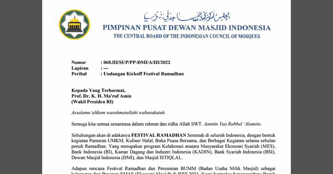

Kronologi Terbongkarnya Pemalsuan Tanda Tangan JK oleh Arief Rosyid
04 April 2022, 09:46 WIBSurat itu juga memuat tanda tangan Ketua Umum DMI Jusuf Kalla dan Sekjen DMI Imam Addaruqutni yang dipalsukan Arief Rosyid.
Advertisement
Nama Arief Rosyid tengah menjadi sorotan. Komisaris Independen PT Bank Syariah Indonesia (BSI) ini nekat memalsukan tanda tangan Jusuf Kalla. Tidak hanya JK, sapaan Jusuf Kalla sebagai Ketua Umum Dewan Masjid Indonesia (DMI), Arief juga memalsukan tanda tangan Sekjen DMI Imam Addaruqutni.
Pemalsuan tanda tangan itu berujung pemecatan Arief Rosyid dari kursi Ketua Departemen Ekonomi DMI per 2 April 2022.
Pemecatan dilakukan dalam rapat pleno yang dihadiri langsung oleh Jusuf Kalla, Wakil Ketua DMI Syafruddin, KH Masdar F Masudi dan Imam Addaruqutni.
Berikut kronologi terbongkarnya aksi pemalsuan Arief Rosyid:
Jumat 1 April 2022
Sekira pukul 09.30-11.50 Rapat pleno digelar DMI. Dipimpin langsung Ketua Umum DMI Jusuf Kalla. Dalam rapat diputuskan pemecatan Arief.
Sabtu 2 April 2022
Arief Rosyid resmi dipecat. Pemecatan Arief tertuang dalam Surat Keputusan (SK) Pimpinan Pusat DMI Nomor:066.H/III/SKEP/PP-DMI/IV/2022 tentang Pemberhentian Tetap dari Kepengurusan DMI atas nama Arief Rosyid Hasan. Posisi Arief di DMI kini telah digantikan mantan Direktur BRI Asmawi Sam.
JK Tahu Usai Ditelepon Protokoler
Aksi tipu-tipu Arief diketahui JK usai dirinya mendapatkan telepon dari protokol Istana. Pihak protokol Istana hendak mengonfirmasi terkait undangan festival Ramadan yang dibuat Arief.
Merasa tidak pernah membubuhkan tanda tangan apalagi bersurat untuk Wakil Presiden (Wapres) Ma'ruf Amin, lantas JK terkejut bukan main.
"Jadi orang protokol ini telepon ke staf Pak JK. Menanyakan apa benar ada surat dari bapak? Pak JK kaget karena tidak pernah kirim surat," kata Penghubung Umum Pengurus Pusat DMI Husain Abdullah.
Anggap Pelanggaran Serius
JK sendiri menganggap perbuatan Arief sebagai pelanggaran serius. Terlebih, surat tersebut dikirimkan ke orang nomor 2 Republik ini.
"Pak JK menganggap itu pelanggaran serius karena tanda tangannya dipalsukan apalagi untuk persuratan kepada Wakil Presiden RI," kata Husain kepada merdeka.com.
Belum Lapor Polisi
Meski menilai perbuatan Arief pelanggaran serius, pihak JK maupun DMI belum berencana melayangkan laporan ke pihak Kepolisian. Padahal, Husain sepakat pemalsuan tanda tangan yang dilakukan Arief sudah masuk ke dalam ranah pidana hukum.
"Ini memang masuk ranah hukum, masalah pemalsuan. Tapi belum tahu perkembangannya ke arah itu, bagaimana sikap dan langkah Pak JK atau DMI selanjutnya," kata Husain.
Isi Surat
Surat yang dibuat Arief Rosyid dengan 'mencatut' nama JK dan Imam Addaruqutni berisi undangan kickoff Festival Ramadan.
Surat dengan bernomor 060.III/SUP/PP-DMI/A/III/2022, itu terdiri dari dua halaman. Halaman pertama berisi undangan acara dan halaman kedua berisikan rencana susunan acara (rundown).

©2022 Merdeka.com/Istimewa
Rencananya acara akan digelar di Masjid Istiqlal, Jakarta, Senin (4/4).
Bukan cuma itu, dalam surat juga dijelaskan agenda dilakukan dengan berbagai macam kegiatan dan berkolaborasi sejumlah pihak, mulai dari masyarakat ekonomi syariah (MES), Bank Indonesia (BI), hingga Kamar Dagang Industri (KADIN).
Surat itu juga memuat tanda tangan Ketua Umum DMI Jusuf Kalla dan Sekjen DMI Imam Addaruqutni yang dipalsukan Arief Rosyid.